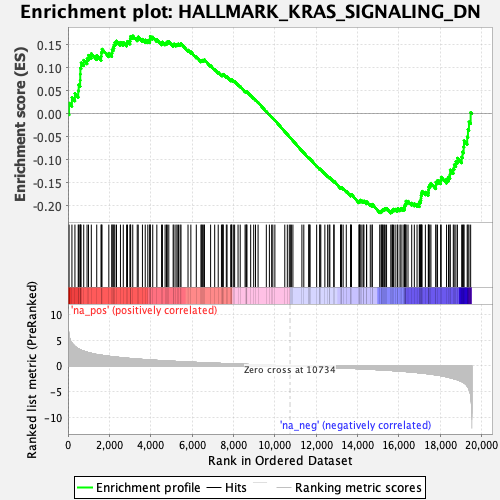

| | | Dataset | PFS |
| Phenotype | NoPhenotypeAvailable |
| Upregulated in class | na_neg |
| GeneSet | HALLMARK_KRAS_SIGNALING_DN |
| Enrichment Score (ES) | -0.21637776 |
| Normalized Enrichment Score (NES) | -0.98076636 |
| Nominal p-value | 0.48630136 |
| FDR q-value | 0.6717574 |
| FWER p-Value | 1.0 |
Table: GSEA Results Summary

Fig 1: Enrichment plot: HALLMARK_KRAS_SIGNALING_DN
Profile of the Running ES Score & Positions of GeneSet Members on the Rank Ordered List
| SYMBOL | RANK IN GENE LIST | RANK METRIC SCORE | RUNNING ES | CORE ENRICHMENT | | 1 | ARHGDIG | 51 | 6.001 | 0.0232 | No |
| 2 | GPRC5C | 190 | 4.423 | 0.0351 | No |
| 3 | EDN1 | 335 | 3.794 | 0.0440 | No |
| 4 | SLC12A3 | 494 | 3.333 | 0.0501 | No |
| 5 | FGF22 | 519 | 3.273 | 0.0630 | No |
| 6 | KRT1 | 586 | 3.139 | 0.0731 | No |
| 7 | KMT2D | 592 | 3.125 | 0.0863 | No |
| 8 | CPA2 | 598 | 3.116 | 0.0994 | No |
| 9 | DLK2 | 632 | 3.053 | 0.1109 | No |
| 10 | PTPRJ | 760 | 2.871 | 0.1167 | No |
| 11 | EGF | 921 | 2.669 | 0.1199 | No |
| 12 | SHOX2 | 992 | 2.593 | 0.1274 | No |
| 13 | TAS2R4 | 1127 | 2.445 | 0.1310 | No |
| 14 | CLDN8 | 1389 | 2.220 | 0.1271 | No |
| 15 | IRS4 | 1601 | 2.084 | 0.1251 | No |
| 16 | KLK7 | 1612 | 2.078 | 0.1335 | No |
| 17 | ENTPD7 | 1644 | 2.060 | 0.1408 | No |
| 18 | IL12B | 1974 | 1.882 | 0.1319 | No |
| 19 | KLHDC8A | 2120 | 1.802 | 0.1321 | No |
| 20 | CLSTN3 | 2131 | 1.799 | 0.1394 | No |
| 21 | ZNF112 | 2184 | 1.774 | 0.1443 | No |
| 22 | THNSL2 | 2223 | 1.754 | 0.1499 | No |
| 23 | ABCG4 | 2266 | 1.739 | 0.1552 | No |
| 24 | PRODH | 2345 | 1.708 | 0.1585 | No |
| 25 | ZC2HC1C | 2536 | 1.622 | 0.1557 | No |
| 26 | MYOT | 2673 | 1.570 | 0.1554 | No |
| 27 | CDH16 | 2834 | 1.505 | 0.1536 | No |
| 28 | SNCB | 2877 | 1.487 | 0.1578 | No |
| 29 | BTG2 | 3000 | 1.447 | 0.1578 | No |
| 30 | COL2A1 | 3008 | 1.445 | 0.1636 | No |
| 31 | TEX15 | 3030 | 1.438 | 0.1687 | No |
| 32 | GDNF | 3131 | 1.402 | 0.1696 | No |
| 33 | KCNE2 | 3347 | 1.335 | 0.1642 | No |
| 34 | FGF16 | 3395 | 1.323 | 0.1675 | No |
| 35 | CAPN9 | 3599 | 1.261 | 0.1624 | No |
| 36 | SLC16A7 | 3734 | 1.220 | 0.1607 | No |
| 37 | KLK8 | 3859 | 1.186 | 0.1594 | No |
| 38 | SERPINA10 | 3955 | 1.159 | 0.1595 | No |
| 39 | CLDN16 | 3968 | 1.156 | 0.1638 | No |
| 40 | EDN2 | 3973 | 1.154 | 0.1686 | No |
| 41 | NGB | 4097 | 1.124 | 0.1671 | No |
| 42 | CDKAL1 | 4295 | 1.074 | 0.1615 | No |
| 43 | ITGB1BP2 | 4524 | 1.017 | 0.1541 | No |
| 44 | SCN10A | 4566 | 1.006 | 0.1563 | No |
| 45 | ACTC1 | 4695 | 0.980 | 0.1539 | No |
| 46 | IL5 | 4764 | 0.964 | 0.1545 | No |
| 47 | SPHK2 | 4799 | 0.956 | 0.1569 | No |
| 48 | SLC6A3 | 4874 | 0.942 | 0.1571 | No |
| 49 | SMPX | 5084 | 0.903 | 0.1502 | No |
| 50 | CKM | 5123 | 0.895 | 0.1521 | No |
| 51 | EFHD1 | 5219 | 0.873 | 0.1509 | No |
| 52 | LGALS7 | 5279 | 0.862 | 0.1516 | No |
| 53 | ASB7 | 5341 | 0.847 | 0.1521 | No |
| 54 | CAMK1D | 5419 | 0.831 | 0.1516 | No |
| 55 | ZBTB16 | 5463 | 0.822 | 0.1530 | No |
| 56 | YPEL1 | 5803 | 0.760 | 0.1387 | No |
| 57 | NPHS1 | 5940 | 0.737 | 0.1348 | No |
| 58 | SLC25A23 | 6203 | 0.685 | 0.1242 | No |
| 59 | MFSD6 | 6428 | 0.644 | 0.1154 | No |
| 60 | MYH7 | 6464 | 0.637 | 0.1163 | No |
| 61 | AKR1B10 | 6510 | 0.630 | 0.1167 | No |
| 62 | TCL1A | 6564 | 0.622 | 0.1167 | No |
| 63 | MTHFR | 6597 | 0.618 | 0.1177 | No |
| 64 | SIDT1 | 6895 | 0.568 | 0.1047 | No |
| 65 | KRT13 | 7092 | 0.535 | 0.0969 | No |
| 66 | PROP1 | 7263 | 0.506 | 0.0903 | No |
| 67 | TFCP2L1 | 7419 | 0.482 | 0.0843 | No |
| 68 | OXT | 7462 | 0.475 | 0.0842 | No |
| 69 | ATP6V1B1 | 7488 | 0.470 | 0.0849 | No |
| 70 | MYO15A | 7506 | 0.467 | 0.0861 | No |
| 71 | RGS11 | 7654 | 0.444 | 0.0804 | No |
| 72 | VPREB1 | 7690 | 0.438 | 0.0805 | No |
| 73 | TFF2 | 7868 | 0.410 | 0.0731 | No |
| 74 | IFI44L | 7901 | 0.405 | 0.0732 | No |
| 75 | TNNI3 | 7915 | 0.404 | 0.0742 | No |
| 76 | ADRA2C | 7992 | 0.392 | 0.0720 | No |
| 77 | ABCB11 | 8056 | 0.383 | 0.0704 | No |
| 78 | INSL5 | 8222 | 0.362 | 0.0634 | No |
| 79 | CYP11B2 | 8326 | 0.346 | 0.0596 | No |
| 80 | COPZ2 | 8562 | 0.314 | 0.0487 | No |
| 81 | SLC29A3 | 8614 | 0.308 | 0.0474 | No |
| 82 | EPHA5 | 8619 | 0.307 | 0.0485 | No |
| 83 | LFNG | 8653 | 0.301 | 0.0481 | No |
| 84 | TLX1 | 8832 | 0.275 | 0.0401 | No |
| 85 | THRB | 8978 | 0.253 | 0.0337 | No |
| 86 | DTNB | 9066 | 0.239 | 0.0302 | No |
| 87 | ITIH3 | 9190 | 0.223 | 0.0248 | No |
| 88 | WNT16 | 9589 | 0.163 | 0.0049 | No |
| 89 | SYNPO | 9737 | 0.142 | -0.0021 | No |
| 90 | TCF7L1 | 9847 | 0.124 | -0.0072 | No |
| 91 | KCNQ2 | 9903 | 0.115 | -0.0095 | No |
| 92 | GPR19 | 10002 | 0.103 | -0.0141 | No |
| 93 | MX1 | 10481 | 0.036 | -0.0387 | No |
| 94 | SSTR4 | 10604 | 0.019 | -0.0449 | No |
| 95 | IGFBP2 | 10698 | 0.005 | -0.0497 | No |
| 96 | SGK1 | 10749 | -0.003 | -0.0523 | No |
| 97 | RYR1 | 10800 | -0.009 | -0.0549 | No |
| 98 | MSH5 | 10874 | -0.018 | -0.0586 | No |
| 99 | CALCB | 11309 | -0.079 | -0.0807 | No |
| 100 | BARD1 | 11401 | -0.093 | -0.0850 | No |
| 101 | GAMT | 11650 | -0.129 | -0.0973 | No |
| 102 | IDUA | 11652 | -0.129 | -0.0968 | No |
| 103 | SPRR3 | 11656 | -0.130 | -0.0964 | No |
| 104 | P2RY4 | 11706 | -0.136 | -0.0983 | No |
| 105 | BRDT | 12022 | -0.187 | -0.1138 | No |
| 106 | PAX4 | 12174 | -0.209 | -0.1207 | No |
| 107 | UPK3B | 12179 | -0.209 | -0.1200 | No |
| 108 | SCGB1A1 | 12223 | -0.215 | -0.1213 | No |
| 109 | MAGIX | 12419 | -0.248 | -0.1303 | No |
| 110 | NR4A2 | 12554 | -0.272 | -0.1361 | No |
| 111 | PNMT | 12627 | -0.285 | -0.1386 | No |
| 112 | NTF3 | 12661 | -0.291 | -0.1390 | No |
| 113 | SOX10 | 12848 | -0.318 | -0.1473 | No |
| 114 | HSD11B2 | 12868 | -0.320 | -0.1469 | No |
| 115 | LYPD3 | 13175 | -0.373 | -0.1611 | No |
| 116 | SLC38A3 | 13203 | -0.377 | -0.1609 | No |
| 117 | GPR3 | 13228 | -0.380 | -0.1605 | No |
| 118 | CCR8 | 13303 | -0.393 | -0.1626 | No |
| 119 | TG | 13455 | -0.419 | -0.1686 | No |
| 120 | EDAR | 13664 | -0.453 | -0.1775 | No |
| 121 | GP1BA | 13667 | -0.454 | -0.1756 | No |
| 122 | MAST3 | 13706 | -0.461 | -0.1756 | No |
| 123 | GRID2 | 14064 | -0.530 | -0.1918 | No |
| 124 | RSAD2 | 14097 | -0.534 | -0.1911 | No |
| 125 | CACNA1F | 14109 | -0.535 | -0.1894 | No |
| 126 | TGM1 | 14125 | -0.538 | -0.1879 | No |
| 127 | CLPS | 14209 | -0.556 | -0.1898 | No |
| 128 | HTR1B | 14275 | -0.567 | -0.1907 | No |
| 129 | PDCD1 | 14308 | -0.573 | -0.1899 | No |
| 130 | NUDT11 | 14433 | -0.595 | -0.1937 | No |
| 131 | PLAG1 | 14440 | -0.597 | -0.1915 | No |
| 132 | KRT15 | 14615 | -0.633 | -0.1977 | No |
| 133 | PDE6B | 14702 | -0.654 | -0.1994 | No |
| 134 | AMBN | 14709 | -0.655 | -0.1969 | No |
| 135 | SLC5A5 | 15072 | -0.734 | -0.2124 | No |
| 136 | NRIP2 | 15137 | -0.749 | -0.2125 | No |
| 137 | PDK2 | 15168 | -0.756 | -0.2108 | No |
| 138 | STAG3 | 15202 | -0.763 | -0.2092 | No |
| 139 | DCC | 15241 | -0.774 | -0.2079 | No |
| 140 | CD207 | 15296 | -0.787 | -0.2073 | No |
| 141 | PTGFR | 15335 | -0.793 | -0.2058 | No |
| 142 | CACNG1 | 15402 | -0.807 | -0.2058 | No |
| 143 | YBX2 | 15608 | -0.867 | -0.2126 | Yes |
| 144 | CALML5 | 15663 | -0.880 | -0.2116 | Yes |
| 145 | HNF1A | 15692 | -0.888 | -0.2093 | Yes |
| 146 | KRT5 | 15734 | -0.902 | -0.2075 | Yes |
| 147 | GP2 | 15815 | -0.922 | -0.2077 | Yes |
| 148 | CNTFR | 15916 | -0.950 | -0.2088 | Yes |
| 149 | CHRNG | 15946 | -0.956 | -0.2062 | Yes |
| 150 | PAX3 | 16053 | -0.989 | -0.2074 | Yes |
| 151 | SPTBN2 | 16104 | -1.010 | -0.2056 | Yes |
| 152 | CPEB3 | 16202 | -1.036 | -0.2062 | Yes |
| 153 | SKIL | 16272 | -1.058 | -0.2052 | Yes |
| 154 | FSHB | 16277 | -1.060 | -0.2008 | Yes |
| 155 | PKP1 | 16297 | -1.068 | -0.1972 | Yes |
| 156 | FGGY | 16337 | -1.079 | -0.1946 | Yes |
| 157 | PCDHB1 | 16340 | -1.079 | -0.1900 | Yes |
| 158 | SERPINB2 | 16439 | -1.117 | -0.1903 | Yes |
| 159 | TENM2 | 16618 | -1.184 | -0.1944 | Yes |
| 160 | TFAP2B | 16745 | -1.229 | -0.1956 | Yes |
| 161 | VPS50 | 16876 | -1.274 | -0.1969 | Yes |
| 162 | SLC30A3 | 16987 | -1.321 | -0.1969 | Yes |
| 163 | TGFB2 | 16991 | -1.323 | -0.1914 | Yes |
| 164 | CELSR2 | 17046 | -1.342 | -0.1884 | Yes |
| 165 | ATP4A | 17066 | -1.348 | -0.1836 | Yes |
| 166 | CPB1 | 17071 | -1.350 | -0.1779 | Yes |
| 167 | KCND1 | 17090 | -1.356 | -0.1730 | Yes |
| 168 | MEFV | 17119 | -1.373 | -0.1686 | Yes |
| 169 | CHST2 | 17279 | -1.443 | -0.1706 | Yes |
| 170 | RIBC2 | 17420 | -1.510 | -0.1713 | Yes |
| 171 | BMPR1B | 17434 | -1.516 | -0.1655 | Yes |
| 172 | CD80 | 17443 | -1.521 | -0.1594 | Yes |
| 173 | CD40LG | 17491 | -1.546 | -0.1551 | Yes |
| 174 | KRT4 | 17547 | -1.579 | -0.1512 | Yes |
| 175 | ALOX12B | 17786 | -1.728 | -0.1561 | Yes |
| 176 | SNN | 17788 | -1.729 | -0.1487 | Yes |
| 177 | ARPP21 | 17867 | -1.775 | -0.1451 | Yes |
| 178 | NOS1 | 18016 | -1.865 | -0.1447 | Yes |
| 179 | CCDC106 | 18042 | -1.885 | -0.1379 | Yes |
| 180 | FGFR3 | 18302 | -2.094 | -0.1423 | Yes |
| 181 | IFNG | 18396 | -2.188 | -0.1377 | Yes |
| 182 | GTF3C5 | 18469 | -2.260 | -0.1317 | Yes |
| 183 | NR6A1 | 18477 | -2.265 | -0.1223 | Yes |
| 184 | NPY4R | 18629 | -2.435 | -0.1196 | Yes |
| 185 | TSHB | 18671 | -2.482 | -0.1110 | Yes |
| 186 | CYP39A1 | 18754 | -2.571 | -0.1042 | Yes |
| 187 | RYR2 | 18828 | -2.669 | -0.0965 | Yes |
| 188 | SLC6A14 | 19035 | -3.014 | -0.0942 | Yes |
| 189 | P2RX6 | 19076 | -3.086 | -0.0830 | Yes |
| 190 | UGT2B17 | 19130 | -3.201 | -0.0719 | Yes |
| 191 | KCNN1 | 19147 | -3.256 | -0.0587 | Yes |
| 192 | CCNA1 | 19301 | -3.869 | -0.0500 | Yes |
| 193 | C5 | 19338 | -4.077 | -0.0343 | Yes |
| 194 | HTR1D | 19386 | -4.460 | -0.0175 | Yes |
| 195 | KCNMB1 | 19468 | -5.722 | 0.0029 | Yes |
Table: GSEA details [plain text format]
Fig 2: HALLMARK_KRAS_SIGNALING_DN: Random ES distribution
Gene set null distribution of ES for HALLMARK_KRAS_SIGNALING_DN